……嘛，因为咱没有宗教背景，只是贴几段百度百科罢了（草）
没有任何漫画原作的细节关联和分析，我能力极端不足还在补课_(:з」∠)_本帖更多是看一看大方向，“对上了”/“对不上”（）而且纯暴论，有兴趣讨论这方面还是建议阅读撒旦说等实际论证。
犹大之吻假说：出处：https://tieba.baidu.com/p/8865837721 ，虽然贴一张图大家看一眼就懂了.jpg
没有任何漫画原作的细节关联和分析，我能力极端不足还在补课_(:з」∠)_本帖更多是看一看大方向，“对上了”/“对不上”（）而且纯暴论，有兴趣讨论这方面还是建议阅读撒旦说等实际论证。
犹大之吻假说：出处：https://tieba.baidu.com/p/8865837721 ，虽然贴一张图大家看一眼就懂了.jpg
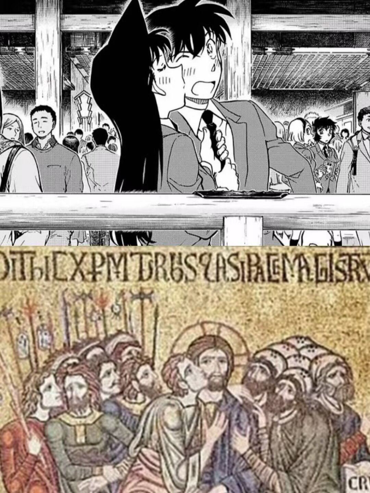
这张犹大之吻不是最出名的一个，但最为接近：由左侧的犹大亲吻右侧的——，其他人分列两侧，信徒在右，士兵在左。世纪之吻中亲吻关系相同，右侧有园子和世良，左侧路人中有一个装饰物，对比之下很容易联想到兵戈。犹大的刻板印象和设定之间其实还是有挺大差异的，而恶魔就在这些差异之中：对于全然不知道亚伯拉罕系典故的人，犹大只是一个“叛徒”，是“卖主求荣的小人”。并不是错误，只是如此抽象的tag会让人忽视很多东西……
……因为帖子容易删，建议直接阅读百度百科.jpg
百科能写≠我能粘贴
其实看了之后就懂了，很难说会比我少懂一点（望天）
……因为帖子容易删，建议直接阅读百度百科.jpg
百科能写≠我能粘贴
其实看了之后就懂了，很难说会比我少懂一点（望天）
“假如犹大在未踏上耶路撒冷之前就死去的话，后世的人就会认为他配列在十二使徒之中，为后人所怀念。若不是他在生命的终了时露出他的本性，那就不会留下骂名了。”
“犹大看到患病的、瘸腿的、瞎眼的，从各城各镇成群地来就耶稣；他也看见垂死的人放在他的脚前。他亲眼看到救主医治病人，驱赶邪灵和起死回生的大能作为。他亲身感觉到基督的能力的凭据。他已看出基督的教训比他以往听过的都优越。”
“他爱耶稣，并极愿与他同在。他感觉到自己有改变品格、改变生活的需要，并希望自己藉着与耶稣联合而能感受到这种改变。”
“犹大在十二使徒中占一席地位，救主赐给他医治疾病和驱赶邪灵的权柄。”
这是第一个重点，犹大在背叛之前，他的形象并不是“叛徒”，而是“圣徒”，是“善人”。
“犹大看到患病的、瘸腿的、瞎眼的，从各城各镇成群地来就耶稣；他也看见垂死的人放在他的脚前。他亲眼看到救主医治病人，驱赶邪灵和起死回生的大能作为。他亲身感觉到基督的能力的凭据。他已看出基督的教训比他以往听过的都优越。”
“他爱耶稣，并极愿与他同在。他感觉到自己有改变品格、改变生活的需要，并希望自己藉着与耶稣联合而能感受到这种改变。”
“犹大在十二使徒中占一席地位，救主赐给他医治疾病和驱赶邪灵的权柄。”
这是第一个重点，犹大在背叛之前，他的形象并不是“叛徒”，而是“圣徒”，是“善人”。
2024-03-06 14:14 | 雪者风形:可能有人疑惑我为什么这里没打码后面还是打了，因为我当时怀疑只有自己能看到（2024-03-07 01:04 | bearaven:对应兰其实看到了新一在推理上的能力，会在别人面前说新一帅2024-03-07 01:14 | 雪者风形:回复 bearaven :应该也对应兰的tag“善良”吧，个人感觉2024-03-07 01:17 | bearaven:回复 雪者风形 :是的，信徒的那种2024-03-27 04:55 | bearaven:对应南英最新的分析，也能看出，如果蘭线更早着陆，不管是淡出还是给个痛快，也不会落到这步田地。所以温柔良夜是没有的，死了当白月光也是想得太美。造物主堵死了所有退路，设置好了传送带，让这位以等待来捕鱼的达人迎来她的XDay
第一个重点，犹大初始形象是“圣徒”，直截了当一点，是“主角团的正义一员”，这个形象直到最后的背叛为止都是客观事实。——当然，有争议，不过这个阶段的争议是无法定性的，“向使当初身便死，一生真伪复谁知。”
这是关于“毛利兰的人设中有犹大属性”猜想可行的前提。当然，如果我们仔细阅读百科，这个即视感会更加……强烈。
（当然，证明就没法子了，直到假死论成真前都很难。假死论也很适合这个百科的发展方向就是。）
这是关于“毛利兰的人设中有犹大属性”猜想可行的前提。当然，如果我们仔细阅读百科，这个即视感会更加……强烈。
（当然，证明就没法子了，直到假死论成真前都很难。假死论也很适合这个百科的发展方向就是。）
背叛起因段，“——多次提出他的国不属这世界，这话使犹大很不高兴。他曾画出一条路线希望——去走。”
划重点，画完了重点就都懂了，这不是什么细节玩梗，这是宏观对标。
立刻推：https://tieba.baidu.com/p/8844043639 名柯漫画导读，毛利兰早期控制柯南实例/毛利兰反感工藤新一推理实例
划重点，画完了重点就都懂了，这不是什么细节玩梗，这是宏观对标。
立刻推：https://tieba.baidu.com/p/8844043639 名柯漫画导读，毛利兰早期控制柯南实例/毛利兰反感工藤新一推理实例
2024-03-07 01:05 | bearaven:对应新一多次抛下兰去推理案子
“——为什么讲那么多令人灰心失意的事呢？他为什么预言自己和门徒将要遭受试炼和逼迫呢？犹大之所以拥戴——的事业，原是希望在新的国度中谋个高位。他的种种希望难道都要落空吗？这时犹大还没认定——不是——的儿子，但他已经在怀疑，并在设法找出个理由来解释—无能的作为。”
这里的重点是“原是希望在新的国度中谋个高位”，可阅读前一层楼提到的漫画导读，其中论证了毛利兰在前期的“推理→名气”诉求，可以相互对照。
“小兰的变化最奇怪，她对洋子案的复盘是“对父亲刮目相看”，从此开始了维护小五郎权威的一生，在小兰的视角里，【要让新一留在身边＝自己要有和新一匹配的名气＝自己应该是名侦探小五郎的女儿】，同时她不断向柯南传递自己喜欢新一的信息，小兰似乎认为柯南既然在新一家出现，这个信息总会被新一知道的。
【】所示的毛利兰等式，这个论断是比较严重的，但是有迹可循，因为目暮在小五郎脱离麻醉后立刻就扑上来刮目相看，但小兰却等到3天后，因为双方的重点不一样，目暮关注推理过程，小兰关注的是“小五郎推理正确”这件事本身的名气收益。”
（第一页，30楼，其实相关论述很多且有变化，我随便找了一段）
这里的重点是“原是希望在新的国度中谋个高位”，可阅读前一层楼提到的漫画导读，其中论证了毛利兰在前期的“推理→名气”诉求，可以相互对照。
“小兰的变化最奇怪，她对洋子案的复盘是“对父亲刮目相看”，从此开始了维护小五郎权威的一生，在小兰的视角里，【要让新一留在身边＝自己要有和新一匹配的名气＝自己应该是名侦探小五郎的女儿】，同时她不断向柯南传递自己喜欢新一的信息，小兰似乎认为柯南既然在新一家出现，这个信息总会被新一知道的。
【】所示的毛利兰等式，这个论断是比较严重的，但是有迹可循，因为目暮在小五郎脱离麻醉后立刻就扑上来刮目相看，但小兰却等到3天后，因为双方的重点不一样，目暮关注推理过程，小兰关注的是“小五郎推理正确”这件事本身的名气收益。”
（第一页，30楼，其实相关论述很多且有变化，我随便找了一段）
2024-03-07 01:06 | bearaven:也对应第一话，“你为什么不当个推理小说家或者足球选手？”2024-03-07 01:16 | 雪者风形:回复 bearaven :兰的人设是连续的，相关的，这种人设层面的设计其实可以对标很多细节（一个设定）2024-03-07 01:23 | bearaven:回复 雪者风形 :所以我完全不同意青山对兰塑造敷衍2024-03-07 01:24 | bearaven:回复 雪者风形 :如果说要对动画组复仇，甚至毁了兰的塑造的仇比拖延哀出场的仇还大。 林原女王演绎的哀很好
“在——给五千人吃饱的时候，他就想促成这事。那时他曾帮助分送食物给饥饿的人群。”
“他是最先想利用分饼的神迹所引起的热情来实现他的理想的。”
“虽然——自己已明说他的国不属这个世界，犹大还是不断地宣称，——必要在耶路撒冷作王。”
犹大的心中存在的——与真实存在的——是并不相同的形象。又或者他明知道对方并非这样形象却还是如此宣称。
那么结果嘛，“要强迫——作王，是他发起的。他的希望最大，故失望也最惨。”
“他是最先想利用分饼的神迹所引起的热情来实现他的理想的。”
“虽然——自己已明说他的国不属这个世界，犹大还是不断地宣称，——必要在耶路撒冷作王。”
犹大的心中存在的——与真实存在的——是并不相同的形象。又或者他明知道对方并非这样形象却还是如此宣称。
那么结果嘛，“要强迫——作王，是他发起的。他的希望最大，故失望也最惨。”
2024-03-07 01:06 | bearaven:兰拜的“神”新一和真实存在的工藤新一其人是不同的
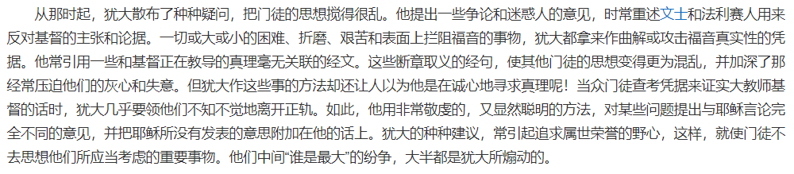
这一段一句也不用删.jpg“固然，他的主张和手段与——的会有所不同，但他认为自己比——还要高明些。”
经典争论：毛利兰到底有没有引喻失义？
2024-03-07 01:07 | bearaven:“如果是新一的话……我想他会这样说。” “新一的话不会让任何人死的，绝对！” “新一还说，真相只有一个！”2024-03-07 01:33 | bearaven:而且，几次三番无视新一要求她不需要打扫等等，自作主张卖感情债2024-03-07 01:37 | bearaven:回复 bearaven :虽说是神学故事 但是也类似寓言故事，是有现实生活中的道理的。小心那些打着你的旗号扭曲你的言语为满足自己私欲的行为
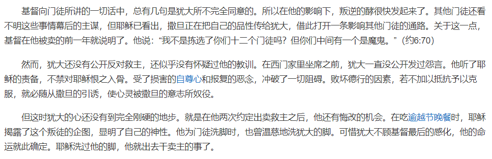
这一段我也没有什么特别的意见，只是提一嘴：犹大和撒旦是有强相关的。我不知道大伙是不是早知道了，但我今天才知道……（乐）
不过第一段倒是值得品一品，“——向门徒所讲的一切话中，总有几句是犹大所不完全同意的。”这个点倒是很符合毛利兰的形象，福尔摩斯.jpg
2024-03-07 01:08 | bearaven:金星符号叠得和杀人书似的，符号上无意间帮助阿芙罗狄忒杀了米迦勒2024-03-07 03:07 | bearaven:兰也想不到自己会成为—的摄像头和皮套啊
重量级来了：
“犹大的推理是：如果——真要被钉十字架的话，那么这件事总是要成就的。他自己出卖——的行动不会改变其结果。如果——不该死的话，出卖他也不过是逼他拯救自己而已。”
拉 窗 帘 （噔噔咚）
毛利兰是不是这么想的确实没证据，但认为毛利兰拉窗帘没问题的人确实很多是这么想的。
“犹大认为——既逃脱过那么多的网罗，现在也必不至于让人捉拿到的。”
“犹大的推理是：如果——真要被钉十字架的话，那么这件事总是要成就的。他自己出卖——的行动不会改变其结果。如果——不该死的话，出卖他也不过是逼他拯救自己而已。”
拉 窗 帘 （噔噔咚）
毛利兰是不是这么想的确实没证据，但认为毛利兰拉窗帘没问题的人确实很多是这么想的。
“犹大认为——既逃脱过那么多的网罗，现在也必不至于让人捉拿到的。”
2024-03-07 01:09 | bearaven:是的，拉窗帘是非常神学的一幕。因为主全知全能，所以肯定能渡过难关。可以认为兰的直觉能时不时开上帝视角：“新一是主角，怎么可能折在这种日常案子里？” 她直觉是对的，不是吗。2024-03-07 01:12 | 雪者风形:回复 bearaven :于是直到耶稣被钉在十字架上，犹大才知道改悔……这丝毫不令人意外的发展。2024-03-07 02:03 | bearaven:回复 雪者风形 :所以这里是在证明自己最懂新一的解读是非常有说服力的。 霸占救世主的话语权，只有自己能释经。兰的直觉也告诉她了，如果在这里丢了这个，她的立场就不妙了。2024-03-07 02:08 | 雪者风形:回复 bearaven :争夺释经权……这个视角下很多毛利兰的行为是能够解释了的。2024-03-07 02:12 | bearaven:回复 雪者风形 :想想，兰可以对全世界宣扬工藤新一是她男朋友，只要本人不在场。 同时，对xxx邮件被看到取笑极为过敏，因为那是证据啊，是她在求新一回来的证据。这会打破她塑造对周边环境的一个假象：是工藤新一主动追她的。 这也是在争夺地位和话语权2024-03-07 02:17 | bearaven:回复 雪者风形 :只要新一不在，你就能看到一个看似会对新一释放善意的兰。但是新一本人可绝少享受到这点过—新一一在场，兰的模式就是驯化新一尝试塑造成自己想要的样子了。2024-03-07 04:02 | bearaven:回复 雪者风形 :剧里剧外都是。发现文吧，发现这种“要以漫画原文为主”，也是话语权啊。青山很长一段时间也只能寄希望于这个，漫画长线30年的塑造和快餐王子公主MV叙事对话语权争夺
“虽然如此，犹大总不相信——会让人捉拿自己的。他出卖——，是要给他个教训。他打算扮演一个角色，使——以后给他应有的。但犹大不知道，他这样做是置——于死地。”
往小里说，代餐也是同一个逻辑（毛利兰打算扮演一个角色，使工藤新一以后给她应有的），只是没有这种代价。前面漫画导读贴讲述了早期毛利兰代餐史。
往小里说，代餐也是同一个逻辑（毛利兰打算扮演一个角色，使工藤新一以后给她应有的），只是没有这种代价。前面漫画导读贴讲述了早期毛利兰代餐史。
2024-03-07 01:12 | bearaven:青山非常珍惜兰的生日。 兰总觉得自己怎么耍情绪都是日常允许的范围，只是在教训新一，因为她觉得新一动机就是看自己笑话，包括伦敦篇。 所以她会不停地用周围给新一上强度，包括冲田。2024-03-07 01:13 | bearaven:红修她差点就拿到她“自觉应有的”了，那个吻
73既然拿救世主盖章新一，那小兰还真可能借鉴了犹大，就是不知道他的恶趣味搞得这么大么
2024-03-06 08:28 | 雪者风形:谢邀，已经在磕耶稣x犹大了，很香2024-03-06 10:13 | 即将02的废物月:回复 雪者风形 :这句居然没用符号代替2024-03-06 10:27 | 雪者风形:回复 即将02的废物月 :没想到不需要（乐2024-03-31 00:48 | 贴吧用户_GS9RC9A:最可怕的是跑去看看诺替斯学派的犹大福音。。。——和犹大的亲密关系也是可以对上的。
不过即使如此，也还是有新兰糖可以磕的，不得不说我确实磕到了（）
“于是犹大俯伏在——脚前，承认他是——的儿子，并恳求他拯救自己。——没有谴责这个出卖他的人。然而——并没有说一句定他罪的话。——只是哀怜地望着犹大说：我为此时，来到世间。”
在我看来，工藤新一这个身份存续的理由确实基本上就是新兰，但在柯南和新一两个身份你死我活的矛盾中前者势必得胜，所以我是假死论+无解药/不使用解药/解药解冻龄的派系。在我眼中，假死剧情中的，甚至整个工藤新一（身份）确实算是“我为此时，来到世间。”
私欲的误读、无知的背叛、盲目的笃信、以饶恕为形式的终极审判……
磕到了，谢谢。
“于是犹大俯伏在——脚前，承认他是——的儿子，并恳求他拯救自己。——没有谴责这个出卖他的人。然而——并没有说一句定他罪的话。——只是哀怜地望着犹大说：我为此时，来到世间。”
在我看来，工藤新一这个身份存续的理由确实基本上就是新兰，但在柯南和新一两个身份你死我活的矛盾中前者势必得胜，所以我是假死论+无解药/不使用解药/解药解冻龄的派系。在我眼中，假死剧情中的，甚至整个工藤新一（身份）确实算是“我为此时，来到世间。”
私欲的误读、无知的背叛、盲目的笃信、以饶恕为形式的终极审判……
磕到了，谢谢。
2024-03-06 10:15 | 即将02的废物月:be美学是吧2024-03-06 10:27 | 雪者风形:回复 即将02的废物月 :有无耶稣x犹太文学，该磕了2024-03-06 22:37 | 谜裳舞:我服了，磕到新兰了，真就悲悯圣父×阴暗信徒2024-03-06 22:39 | 谜裳舞:回复 谜裳舞 :咦，好像不小心给工藤抬了辈分（）2024-03-06 23:48 | 雪者风形:回复 谜裳舞 :没事，他辈分一直很高，和黑羽盗一一个辈分（不是2024-03-07 02:27 | bearaven:耶稣位格新一只有二分之一，还有另一半，所以这个场景会变成…… 兰姐姐和她磕的cp2024-03-07 02:35 | 雪者风形:回复 bearaven :三角关系某种意义上更好磕了，“我为此时，来到世间”对于假死论中临时复原的新志也都说得过去，如果把这一轮和过去割裂开的话（2024-03-07 02:37 | bearaven:兰的直觉太好了，好到其欧皇手气，好到其“知道”身边这个发小是主角，是这个世界的中心同样也带来了磕柯哀的品味。问题在于她的私心膨胀了，希望世界中心绕她转，“神的新娘”，那种类似巫女的属性，也让兰老是和神深鬼鬼牵扯不清。2024-03-07 02:41 | bearaven:回复 雪者风形 :磕sr的很多朴素的点是歪打正着的，可能是出于对利益的投机敏感。什么永恒啊世纪之吻啊灵魂贩卖啊……不过缺少文化修养，没想到自己说的在特定背景下是对应什么。 兰的核心动机看粉丝也能更明白，在符号上那是一种神婚。2024-03-07 02:45 | bearaven:回复 雪者风形 :所以符号上，兰的胜利条件一定会包含从神那里换到结婚“信物”，比如戒指。因为那会成为神权证明，没人能质疑她说的就是神说的。再靠驯化事实上让神拜在自己裙下，那确实完成了兰喜欢的“I'm the king of the world”2024-03-07 02:50 | bearaven:回复 bearaven :sr不发音就是，已经提前开香槟，在享受整个名柯世界都是给自己消费的快感了嘛。2024-03-07 02:54 | bearaven:回复 bearaven :兰一“胜利”，ta们就夺舍，当然也有那种等不及的玛丽 苏 东西南北 山川河流 小雨夹雪 。 从作品内视角看，在更高维度和作品内犹大牵扯颇深的satan就是……作品外的谁吧。2024-03-07 02:55 | 雪者风形:回复 bearaven :这个视角太绝了，卧槽2024-03-07 02:58 | bearaven:回复 雪者风形 :ca基本没这种需求 是見守る2024-03-07 03:12 | bearaven:回复 雪者风形 :文化人骂人不带脏字。所有扭曲兰觉得自己比青山这个上帝懂怎么塑造兰的，还有对兰甘之如饴的。m23开始洗了这么几波，还缠着兰的。2024-03-31 00:49 | 贴吧用户_GS9RC9A:回复 雪者风形 :耶——基——万世巨星，又称jcs2024-04-25 06:44 | 落叶缤纷521:第一次听说犹大之吻，也是磕到他和耶稣了


现在有一个问题：
毛利兰自己不愿意相信柯南=新一，这一点众所周知。
那么她是否真的不相信柯南=新一？
甚至更进一步，毛利兰是否真的对“风险”一无所知、一无所想？
这不会有答案……目前。
但最终会盖棺定论。
毛利兰自己不愿意相信柯南=新一，这一点众所周知。
那么她是否真的不相信柯南=新一？
甚至更进一步，毛利兰是否真的对“风险”一无所知、一无所想？
这不会有答案……目前。
但最终会盖棺定论。
比如兰这个怪怪的微笑伏笔……73你到底怎么想的
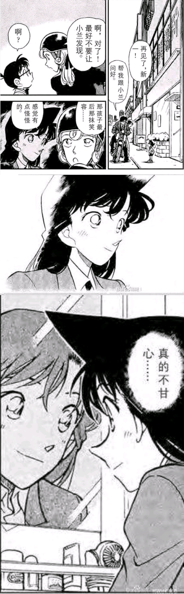
2024-03-06 10:05 | 清风入生🌸:我以前是觉得可能是为了让兰加入红方的伏笔，选择等待新一的无奈微笑，但是后面剧情来看又感觉这个猜想不那么真，新一不告诉她应该能猜出说明不想让外人知道，但是伦敦马拉松和到处谈起新一这点又觉得emmmm2024-03-06 10:16 | 即将02的废物月:回复 清风入生🌸 :这里如果算胜券在握的话，后面就是强烈的不安2024-03-06 10:18 | NCC74656Voyage:请问是哪一话？我去翻翻前文2024-03-06 10:41 | 即将02的废物月:回复 NCC74656Voyage :落叶缤纷中的质问2024-03-06 10:42 | NCC74656Voyage:回复 即将02的废物月 :谢谢2024-03-06 10:43 | 即将02的废物月:回复 NCC74656Voyage :14卷第4话好像2024-03-06 23:01 | 卷福花生酱酱酱:真的好怪2024-03-07 01:15 | bearaven:这个阶段是“你不承认也没关系，我等”2024-03-07 01:52 | bearaven:危命如果只有柯，那他已经被兰拿下了。不过还有哀。青山神话体系的核心，柯哀二人一体，救世主位格之间的互相救赎，不用独自背负所有的罪了。2024-03-07 01:57 | bearaven:巴士也是，m26也是，无论哪一方想自我牺牲，另一方都会将其拉上来2024-03-07 11:06 | 贴吧用户_0795E8E:回复 bearaven :互相舍身救赎是反映了相聚里面的那个约定，你要比我活得久万事转若哀又开始了

。
2024-03-06 10:15 | 贴吧用户_GyKKPP4:。2024-03-06 10:15 | 贴吧用户_GyKKPP4:。2024-03-06 10:15 | 贴吧用户_GyKKPP4:。
这图，我的妈呀
先叠甲：只是对tzj有粗略的了解，毕竟是西方文化乃至世界文化重要的组成部分，并不是什么神学专家，也不是为了传播什么，只是暴论，图一乐就行
看过这样一篇文章“一些神学家们建议说，建立Eucharist正是犹达斯决心行动的时刻——这是一条分界线，将YS的真门徒和假门徒给区分开。当YS说“这是我的身体”“这是我的血”时，犹达斯心想“又来了，我已经受够他这套了”，因为他始终无法理解YS所说的晦涩的话语，尤其无法理解当YS讲论自己将来在Eucharist中的真实临在，于是他决定放弃YS，走出房间走向他的30枚银币。当YS说“这话使你们起反感吗？...但你们中间有些人，却不相信。”他并不是说犹达斯拒绝承认他是默西亚，不相信他是TZ的圣者，他指的是犹达斯不相信他在此对于“吃我的肉喝我的血”——也就是Eucharist中他的临在的讲论。”
那么小兰一直在不愿意相信什么呢？之后又会发生什么呢？
看过这样一篇文章“一些神学家们建议说，建立Eucharist正是犹达斯决心行动的时刻——这是一条分界线，将YS的真门徒和假门徒给区分开。当YS说“这是我的身体”“这是我的血”时，犹达斯心想“又来了，我已经受够他这套了”，因为他始终无法理解YS所说的晦涩的话语，尤其无法理解当YS讲论自己将来在Eucharist中的真实临在，于是他决定放弃YS，走出房间走向他的30枚银币。当YS说“这话使你们起反感吗？...但你们中间有些人，却不相信。”他并不是说犹达斯拒绝承认他是默西亚，不相信他是TZ的圣者，他指的是犹达斯不相信他在此对于“吃我的肉喝我的血”——也就是Eucharist中他的临在的讲论。”
那么小兰一直在不愿意相信什么呢？之后又会发生什么呢？
2024-03-06 10:46 | 即将02的废物月:看来恶意是真实存在的，73对兰的魔鬼的爱2024-03-07 08:47 | bearaven:回复 即将02的废物月 :主最宠爱的天使。青山的好孩子。魔术师的好助手。蘭Girl。2024-03-07 08:53 | 即将02的废物月:回复 bearaven :“没有什么好不甘心的，对你来说”，毕竟不是谁都能胜任这个关键角色的2024-03-07 09:14 | bearaven:回复 即将02的废物月 :座的侵略者，座的守护者，名柯最大的KP，守着这个故事最大的秘密。“完全相反”位格。
镇楼图仔细看的话还要更像一点，左侧似是对话的二人正对上了交头接耳的士兵，右侧三名信徒中两人看向中间的两人，则是和两个熟人相照应，别过头去的一人也对上了……
这构图。。
2024-03-06 11:09 | 雪者风形:只能说终于体会到了对面说的“分析压根不重要”，这下谜底摆在谜面上了（2024-03-06 12:41 | 即将02的废物月:回复 雪者风形 :什么红楼梦
这……
妈耶
2024-03-06 11:25 | 雪者风形:话虽如此，这张图也不是我拼的（悲 是吧群群友的图
要结合上下文理解，因为这个系统是有多重提示的。 979-981那个老师隔壁的案子有明确的前文提示的最后晚餐，里面脸上的标记位置也是这个位置。 而著名的最后晚餐图犹大安排的位置也是如此。
这些在原帖后面都有提起你可以看一下
这些在原帖后面都有提起你可以看一下
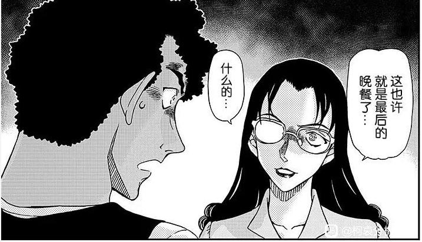
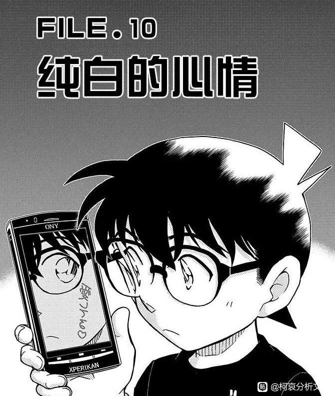
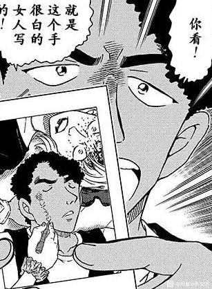
2024-03-06 11:37 | 雪者风形:其实看了（）我比较懵的一点是平常搜出来的那个版本似乎是反过来的，和镇楼图版本不太一样，区别更大一些，不是很了解宗教历史所以也不清楚怎么回事2024-03-06 11:39 | 雪者风形:主要是我对犹大的印象之前是没有很多特点的，心思着大伙可能也差不多（）倒不如说是想开个贴吐槽一下真实人设和刻板印象的区别（2024-03-06 22:53 | 贴吧用户_057V96N:不止如此。2017年（980-1006）本年度共27话，8个事件；以纯白心情开始（最后的晚餐）以寻找玛利亚为止。如果把挂件篇当成红修前篇，寻找玛利亚当成红修后篇。那就是2017年以最后的晚餐开始以犹大之吻结束，造成的影响在寻找玛利亚发展，结局导致新一封号2024-03-09 03:36 | 雪者风形:回复 贴吧用户_057V96N :如此一来犹大背叛耶稣的剧情其实已经演完了，假死论对应的应该是耶稣的复活（然后又死是吧2024-04-05 13:30 | 我有嘉賓00:回复 贴吧用户_057V96N :难怪那角色要叫玛利亚的，怕不是和圣母玛利亚挂钩。
如果对标救世主，是不是会有十字架后3天复活，工藤新一的复活什么的？
2024-03-06 11:40 | 雪者风形:假死论本身就是福尔摩斯和耶稣双重tag吧（）宗教我不熟可以问原帖楼主_(-ω-`_)⌒)_就在楼上一层2024-03-06 22:30 | 奥斯丁格理芬:总不会是那个奇葩的真人版吧？2024-03-06 23:50 | 雪者风形:回复 奥斯丁格理芬 :那个应该是普通的IF路线，复活应该只是实质上作为柯南活下去了吧（2024-04-05 13:32 | 我有嘉賓00:回复 奥斯丁格理芬 :那个真人版里的蘭太好了，完全不像犹大
这个达芬奇的最后晚餐是这个神话体系最有名的情景，里面的位置是这样的：
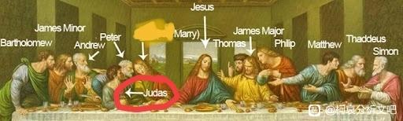
2024-03-06 11:47 | 雪者风形:*麻瓜凝视* *没懂*2024-03-06 11:49 | 雪者风形:回复 贴吧用户_0795E8E :咱其实对西方宗教了解很轻微还刻板印象拉满，所以才开的这个帖子读犹大具体设定，某种意义上算是直播初见（？）其实只是个水帖的程度（瘫）2024-03-06 11:56 | 贴吧用户_0795E8E:回复 雪者风形 :最后晚餐时耶稣说在座一个人会背叛我，然后犹大就有了那个吻来标记耶稣给想要抓他的人辨认。世纪之吻这个故事的前文就是最后晚餐。2024-03-06 11:59 | 贴吧用户_0795E8E:另外关于脸是有 turn the other cheek 这个梗，在很多艺术作品包括达芬奇最后晚餐都有体现，就是耶稣故意转过脸来让意图加害于他的人打（标记）。 所以你看到的很多图才有很多比较刻意的转脸的动作2024-03-06 11:59 | 雪者风形:回复 贴吧用户_0795E8E :最后的晚餐和耶稣遭遇背叛的顺序关系和连接关系本身我确实听说过，那个临近红修时提到最后的晚餐也还算明白（没写是因为这个贴真的没想太认真探讨_(-ω-`_)⌒)_2024-03-06 12:00 | 雪者风形:回复 贴吧用户_0795E8E :主要是没明白您提到的（？）这个位置关系在名柯的照应（小声2024-03-06 12:02 | 雪者风形:回复 贴吧用户_0795E8E :原来是这样，转脸和标记这两个tag和那几张图有关联（･ω･）2024-03-06 12:32 | 贴吧用户_0795E8E:回复 雪者风形 :我其实也比较云但是理论比较多所以有些分析是先感觉到再补支持基础，所以比较分散。2024-03-07 08:33 | bearaven:回复 雪者风形 :因为最后晚餐，犹大坐在耶稣右手味，所以特意在红修之前准备兰一个符号上近似的脸上的“我爱你”，同一边来预告，还特意提了最后的晚餐，暗示犹大之吻要来了。结果千禧准时而至。
在琢磨“还好我很坚强”是不是也能对上，但百科没有，直接硬上最多贴一贴犹大圣经（
2024-03-06 17:32 | 贴吧用户_0795E8E:这个出处不是基督教那些，是一个短篇2024-03-06 23:33 | 沉琢沉琢:埋的比较深
我看到有说正确的翻译是 如果我真的很坚强就好了 哪个才是对的啊？2024-03-06 23:44 | 雪者风形:回复 沉琢沉琢 :不晓得，我也听说过……真是这样的话至少少了点贴金2024-03-07 04:44 | 十相阀门:回复 雪者风形 :原文是这个“ホント…強(つよ)かつたらよかつたのにね…”
还有高手？我的老天爷
 我好震惊啊，细思极恐
我好震惊啊，细思极恐黑色子蛋！
牛的
高手
牛
还有高手?
插眼
补一个猜测，红修放在1000话是为了凑“千禧年”，的确是“世纪”。
也用比较好找的百科：
千禧年亦作“千年王国”，基督教神学名词，源于《新约·启示录》。指耶稣基督复临并在世界建立和平与公义国度的1000年。这期间，信仰基督的圣徒们将复活而与基督共同为王；魔鬼暂被捆锁；福音将顺利传遍世界。千年期满，魔鬼又被释出，再次进行迷惑人的活动。最后即是世界末日。
看吧，一千话满就是这样了。所以马上跟着要寻找玛丽亚，马上“释出”乌丸莲耶的信息了。
红茶会也是一个很重要滴迹象，千话之后的柯不再尽在掌握来，很多信息他是不知道的—甚至比读者知道得还少，比如rum是谁
也用比较好找的百科：
千禧年亦作“千年王国”，基督教神学名词，源于《新约·启示录》。指耶稣基督复临并在世界建立和平与公义国度的1000年。这期间，信仰基督的圣徒们将复活而与基督共同为王；魔鬼暂被捆锁；福音将顺利传遍世界。千年期满，魔鬼又被释出，再次进行迷惑人的活动。最后即是世界末日。
看吧，一千话满就是这样了。所以马上跟着要寻找玛丽亚，马上“释出”乌丸莲耶的信息了。
红茶会也是一个很重要滴迹象，千话之后的柯不再尽在掌握来，很多信息他是不知道的—甚至比读者知道得还少，比如rum是谁
2024-03-07 00:24 | bearaven:对了，这里说的启示录，和默示录是一个东西2024-03-07 00:30 | 世界上没有真理:1000話是不是也象徵真相要一步一步被揭開？好像看到有人預測1000話之後是感情線分水嶺？2024-03-07 00:31 | bearaven:回复 世界上没有真理 :玛丽亚的箭头2024-03-07 00:36 | 世界上没有真理:回复 bearaven :在飲水鳥那邊就有說箭頭是反的，好有趣喔！2024-03-07 10:48 | 贴吧用户_0795E8E:这个就是我之前说的millenarian apocalypticism 里面的一个信仰体系，就是千年后的末日。但是玛丽亚的那个迷宫是正面意义的东西，作为全篇的导读与解读，差不多是当初长期休刊前的全局感慨这样的态度。玛丽亚体系的话，其实我更希望他们是magdalenite, 不过这个不太可能吧2024-03-07 10:53 | bearaven:嗯，类似抛出末日宣言后马上给剧透吧，总集篇的同时揭晓boss2024-03-07 15:28 | 贴吧用户_0795E8E:其实千这个数字在日系/相聚里面也有，就是响子的原本家千草，对应无音代表变化多彩。不过我不太清楚是否有其他体系相关。战国那边有个千姬，德川家但是嫁给了末代大阪城主。符合留美子出身豪族（也是黑衣组织家族）但在敌营的规格。 另外，福星里面有个“歳末は钟鸣り”，岁末~年底或纪元末都可以2024-03-07 15:30 | 贴吧用户_0795E8E:歳末は钟鸣り，建东寺需要晚上鸣钟1000次，而这里的鸣钟是传达对樱花老师的爱意2024-03-08 03:32 | 贴吧用户_0795E8E:回复 贴吧用户_0795E8E :哦对了，原尊himiko有1000个仆人，太阳女王本尊
所以，灰原=抹大拉的玛利亚，所以寻找玛丽亚同学真的指代寻找真正的宫野志保？青山老贼也喜欢《达芬奇密码》？还是原著加电影的那种？下面是《达芬奇密码》里面的谜语。
伦敦骑士身后为教皇安葬。（In London lies a Knight a Pope interred.）
功业赫赫却触怒圣意。（His labor’s fruit a Holy wrath incurred.）
所觅珠宝应在骑士墓上。（You seek the orb that ought be on his tomb.）
红颜结胎道明其中秘密。（It speaks of Rosy flesh and seeded womb.）
不是指教皇Pope克雷芒五世下令围剿圣殿骑士knight，而是指亚历山大·蒲柏A.Pope主持牛顿爵士knight的葬礼。牛顿墓上有一个巨大的球状雕塑，但墓中没有引导牛顿发现了万有引力定律的苹果APPLE。苹果有着玫瑰色的果肉，以及孕育其中的果核，下一颗苹果树的种子，也暗指夏娃咬了一口的苹果。
圣杯在罗斯琳教堂下静待（The Holy Grail’neath ancient Roslin waits.）
剑刃圣杯守护者她的门宅（The blade and chalice guarding o’er Her gates.）
大师杰作掩映中相拥入眠（Adorned in masters’loving art, She lies.）
星空下她可安息无碍（She rests at last beneath the starry skies.）
描述的不仅仅是是罗斯琳教堂，还是卢浮宫。罗斯琳Roslin与玫瑰线Rose line，英国现代的本初子午线与法国最初的本初子午线。剑刃与圣杯融合成的不仅是罗斯琳教堂地面上的大卫之星，也是卢浮宫的倒金字塔和地面上的微型金字塔。星空不仅是罗斯琳教堂天花板上雕刻的各种星球，也是透过卢浮宫金字塔看见的真实星空。
难道青山老贼真的是一个天才？
伦敦骑士身后为教皇安葬。（In London lies a Knight a Pope interred.）
功业赫赫却触怒圣意。（His labor’s fruit a Holy wrath incurred.）
所觅珠宝应在骑士墓上。（You seek the orb that ought be on his tomb.）
红颜结胎道明其中秘密。（It speaks of Rosy flesh and seeded womb.）
不是指教皇Pope克雷芒五世下令围剿圣殿骑士knight，而是指亚历山大·蒲柏A.Pope主持牛顿爵士knight的葬礼。牛顿墓上有一个巨大的球状雕塑，但墓中没有引导牛顿发现了万有引力定律的苹果APPLE。苹果有着玫瑰色的果肉，以及孕育其中的果核，下一颗苹果树的种子，也暗指夏娃咬了一口的苹果。
圣杯在罗斯琳教堂下静待（The Holy Grail’neath ancient Roslin waits.）
剑刃圣杯守护者她的门宅（The blade and chalice guarding o’er Her gates.）
大师杰作掩映中相拥入眠（Adorned in masters’loving art, She lies.）
星空下她可安息无碍（She rests at last beneath the starry skies.）
描述的不仅仅是是罗斯琳教堂，还是卢浮宫。罗斯琳Roslin与玫瑰线Rose line，英国现代的本初子午线与法国最初的本初子午线。剑刃与圣杯融合成的不仅是罗斯琳教堂地面上的大卫之星，也是卢浮宫的倒金字塔和地面上的微型金字塔。星空不仅是罗斯琳教堂天花板上雕刻的各种星球，也是透过卢浮宫金字塔看见的真实星空。
难道青山老贼真的是一个天才？
2024-03-06 23:46 | 雪者风形:啊这，忽然想起来这本书我也看过，就是忘干净了（2024-03-07 00:15 | bearaven:几个玛丽亚之中，抹大拉的玛丽亚可能更接近 赤井 玛丽那边？2024-03-07 00:16 | bearaven:在小阿卡那里，红桃就是圣杯，方片就是星币。 方片、钻石、星 ♦️ 💎 ⭐️2024-03-07 00:18 | bearaven:就看会不会安排兰让救世主流血、然后用杯子盛了。 毕竟已经上了“世纪”之吻，打好标记了嘛。贝早就说了，X是吻，也是靶子2024-03-07 00:19 | 世界上没有真理:回复 bearaven :好奇杯子對應什麼?2024-03-07 00:21 | bearaven:回复 世界上没有真理 :兰本人就是圣杯A2024-03-07 00:21 | bearaven:回复 世界上没有真理 :真第一话也让兰被血淋了个够2024-03-07 00:24 | 世界上没有真理:回复 bearaven :我突然想到紅修那個傳說，天狗的臉被飛濺的血染的通紅......，所以怎麼越想越可怕2024-03-07 00:29 | bearaven:回复 世界上没有真理 :死一次（瀑布）、复活（归来记）、最后的审判。 结局篇大概是这样吧。 不过，救世主=福尔摩斯=Sherrinford的话，Sherry也是这个位格，神之血。出血的可能不是新一2024-03-07 00:36 | 世界上没有真理:回复 bearaven :對欸！按分析哀也是二分之一福爾摩斯，那麼流血的也不一定是新一了，搞不好是志保假扮新一也有可能2024-03-07 00:59 | bearaven:回复 世界上没有真理 :这作品的上帝就是青山啊。哀当嘴替其实也有这个成分，把自己的阿尼玛放进作品里啊2024-03-07 04:55 | 瑀珊0209:寻找玛利亚那部分我一直搞不懂，玛丽亚是个小角色，73居然给了她六页..这个角色不管是不是cz说的作用，也绝对是有用的感觉。2024-03-07 05:13 | 即将02的废物月:回复 瑀珊0209 :其实是个意义比较明确的指代角色，本身可能和主线没啥关系2024-03-07 08:24 | bearaven:这么想来，把兰作为通关奖品的圣杯对很多故事都没问题，但是这个故事不行。 救世主需要通过层层难关拿盛着自己血的杯子当奖品？2024-03-07 10:55 | 贴吧用户_0795E8E:另外，神之血这个意象，应该和A药固定为红白有关
回复 bearaven :赤＃玛丽亚是mary salome, 圣母姐妹。圣母是哀妈。 mary magdalene ~ 东尾这个, 随从与影子。名字这个东尾的东应该是太阳东升的意思。2024-03-07 10:56 | 贴吧用户_0795E8E:赤＃家的渔船情节是他们家作为渔夫照应哀的意思。这些情节我在那个帖子里面有说过但是没整理好所以后来删掉了。2024-03-07 11:00 | 贴吧用户_0795E8E:其实真正的早期基督教史是mary magdalene 作为真正传人，而且教派内女性比较多。但是后来保罗与peter夺得大权把这一派的人赶跑了。 至于她与耶稣的真正关系其实是没有婚配的灵魂伴侣这种非传统式关系，详情可以看Elizabeth Schrader/Elaine Pagels 等的研究。所以我感觉如果给老贼灌输这个他肯定喜欢2024-03-07 11:13 | 贴吧用户_0795E8E:回复 世界上没有真理 :其实兰要染血是在重置第一集就提出了的，在重置第一集过山车那里被淋浴。而且是珍珠项链与珍珠泪都有的。2024-03-07 11:19 | 贴吧用户_0795E8E:回复 bearaven :救世主也不是全取，圣诞与献祭这块比较重要，全篇的话还是融雪，走出黑暗这种故事结构。对应死而后生的话也可以。 不太好判断这个体系的初始。老贼本身是很早就画了夏日圣诞，留美子那边1987就有了1磅福音。是不是受了什么刺激开始乱拜菩萨？因为同时间出现了那个失去的孩子的形象2024-03-07 11:26 | 贴吧用户_0795E8E:失去的孩子，也就是樱花篇开始的时候老师说的那个，是小望。虽然在福星里面出现很晚，但是地位莫明的高。感觉是作者阶段性分水岭的一个人物。如果相聚这一代是本人经历为主，孩子辈就是这个小望模式的寄托。其实老贼也是初期是搞姐弟恋的狂魔，但是后面开始搞青梅讲小孩故事，这个转折也是对孩子的感情2024-03-07 12:40 | 贴吧用户_0795E8E:回复 贴吧用户_0795E8E :又研究了一下，老贼这个夏日圣诞老人也是1987年。 你们经历了啥2024-03-07 14:50 | 贴吧用户_0795E8E:回复 bearaven :关于玛丽亚我做了一些考古，福星里面其实出现了而且与人鱼体系有同时出场。 两者连接就是同一个作者。2024-03-07 14:51 | 贴吧用户_0795E8E:回复 贴吧用户_0795E8E :这个东西我放在那个人鱼公主帖子里面了


还有高手？
回顾一下kiss X 在名柯里指什么吧。宗教味最终的贝是这么说的
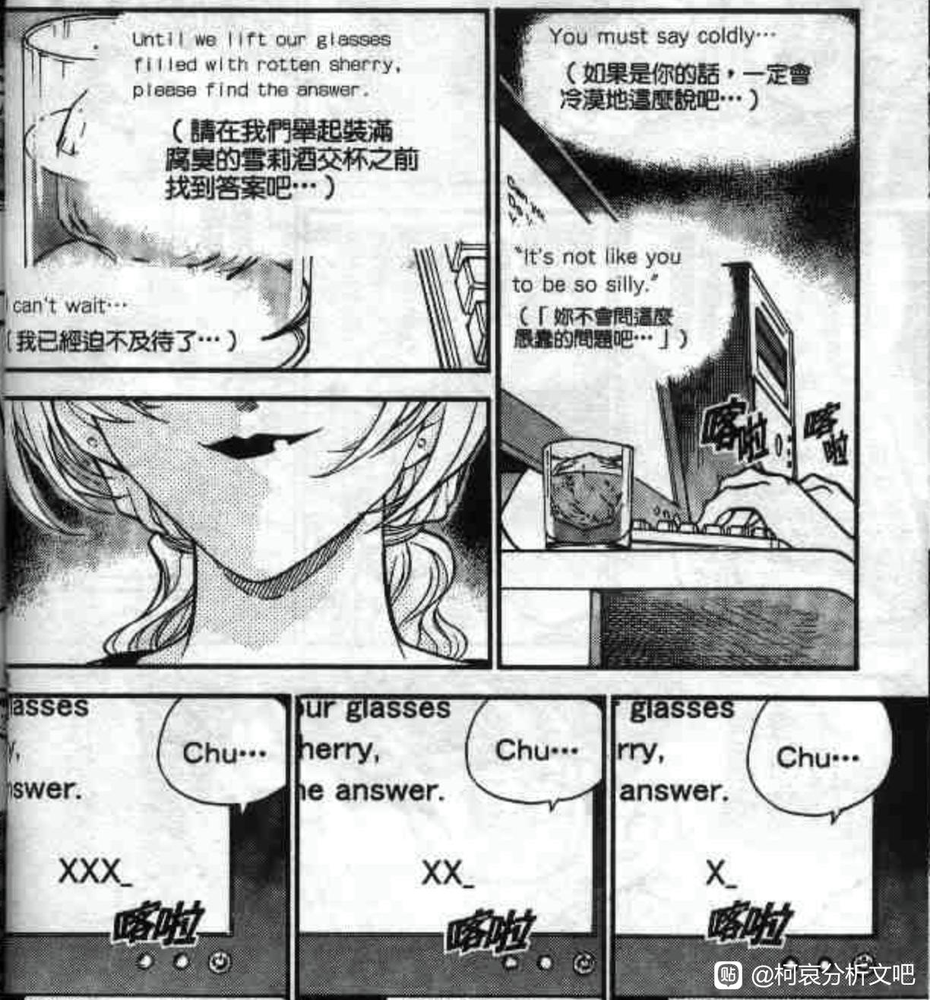
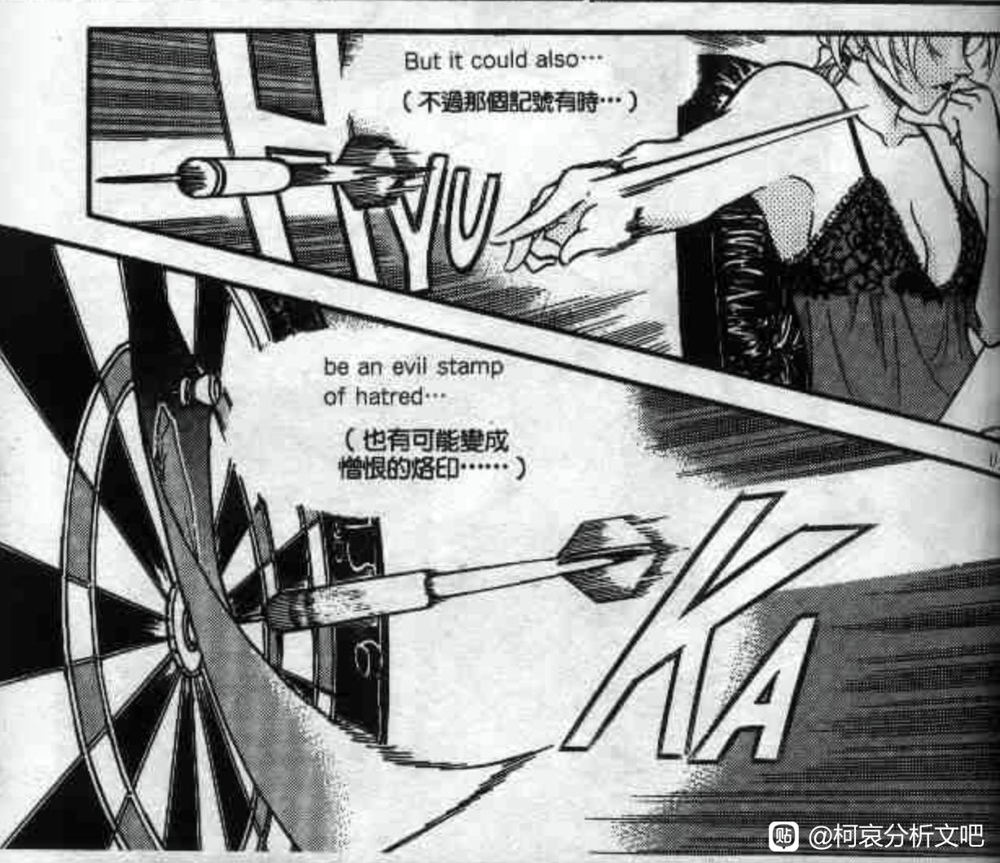
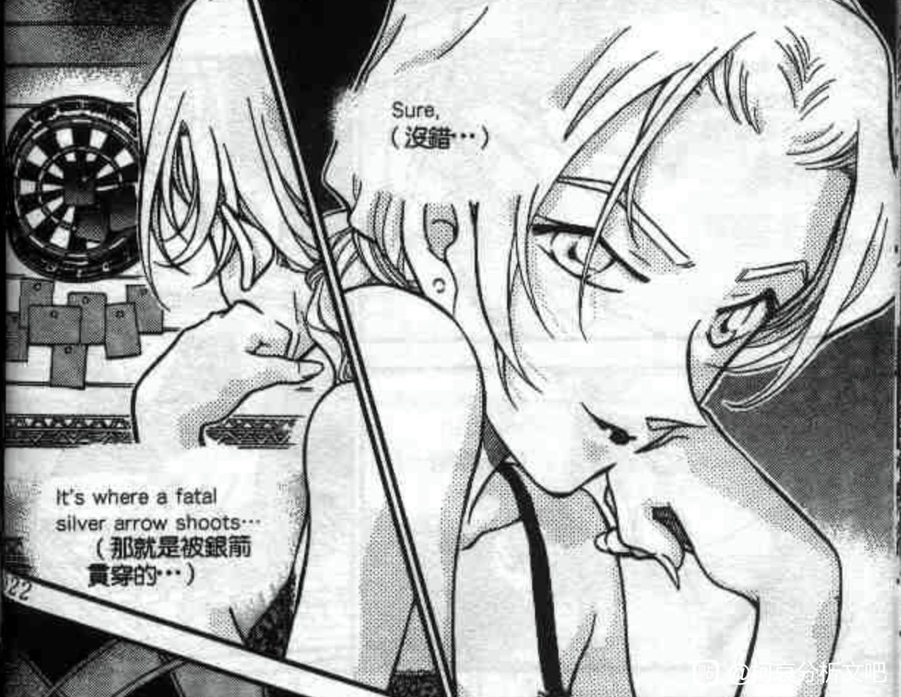
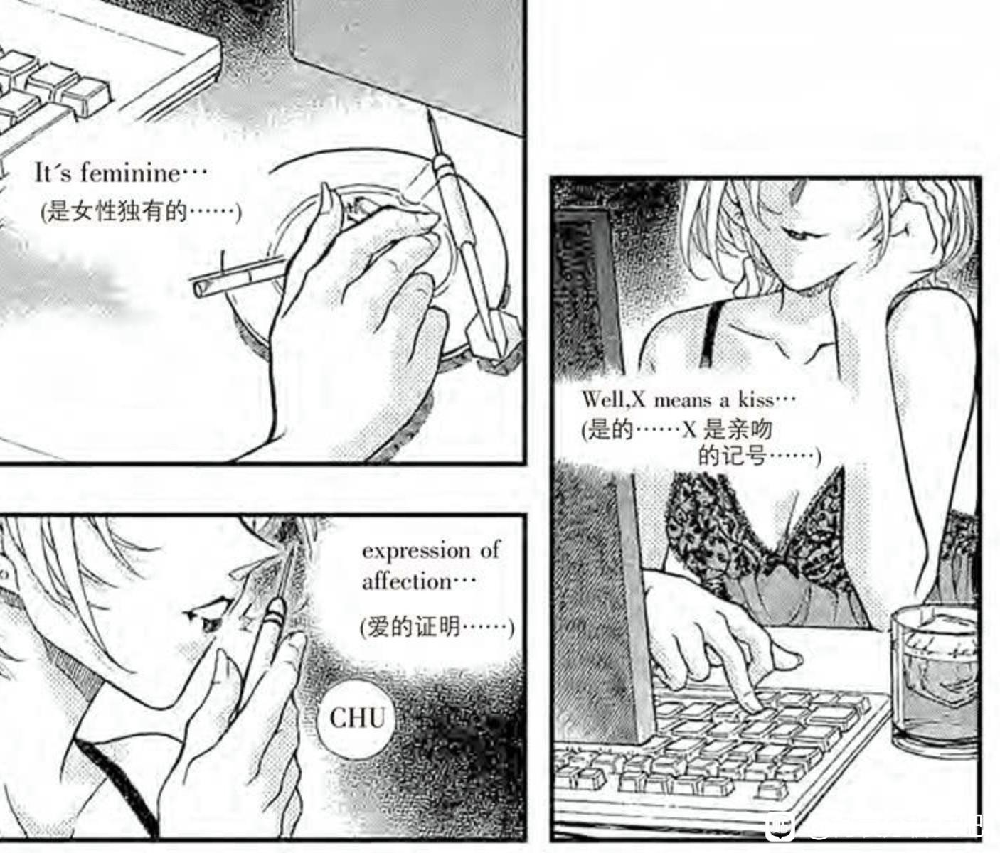
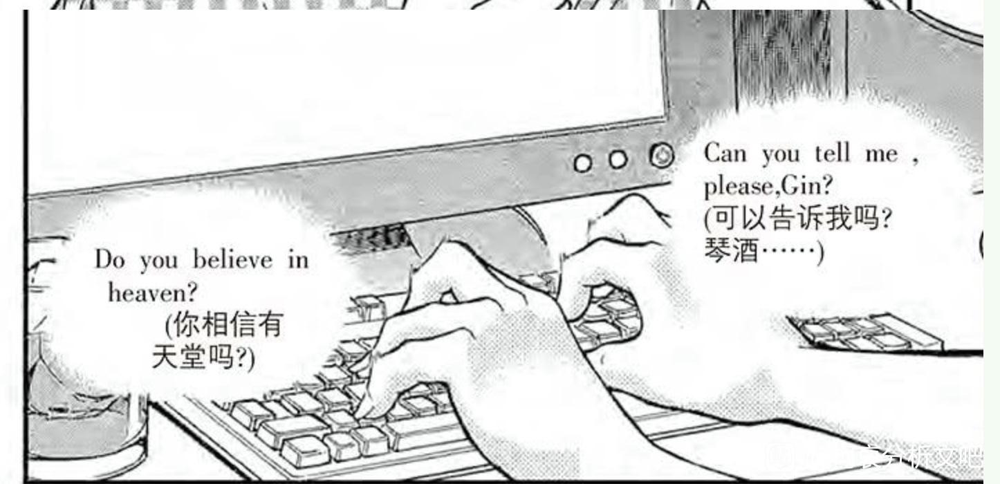
2024-03-07 10:52 | 贴吧用户_0795E8E:这个地方贝姐作为反面镜像的结构比较明显。 关键是杯子，承载神血的圣杯。 如果贝姐这个是腐烂的sherry（回忆我之前介绍的配酒理论里面苦艾酒是干sherry的代替品，vermouth=rotten sherry），伪圣杯，真正的那位是承载真正神血与圣灵的。 玛丽亚里面的杯子装着可以让饮水鸟行动的圣水寓意可见。2024-03-07 10:54 | bearaven:回复 贴吧用户_0795E8E :毕竟这章标题就叫《采收苹果的时刻》，和案情几乎无关2024-03-07 11:03 | 贴吧用户_0795E8E:回复 bearaven : vermouth可以用苹果做，就是腐烂的苹果啦
这么看老贼还真是恶趣味，我记得他几次cue“世纪之吻”，说很满意自己画的这一幕，其实无异于凶手发布的“犯罪预告”。在大家以为是新兰的高光时刻，其实为将来的反转埋下了伏笔，怕不是说这些话的时候的时候心里暗爽不已吧
2024-03-07 00:35 | bearaven:对。默示录。免得你们说我临时改剧本，那我就发预告加比拟杀人。 就像羽贺响辅，因为不和谐音就救人，一定要对应上符号来做。2024-03-07 01:28 | 世界上没有真理:回复 bearaven :一定要跟符號有所對應甚至連生肖年都很嚴格把控劇場版劇情，並且他都把線索埋在漫畫各個章節裡，暗號也都給了，看不出來的到時候被騙進來殺也不是他的問題，真可怕這人！2024-03-07 01:49 | bearaven:回复 世界上没有真理 :就别打扰他最后的大魔术了，银箭已经在弦上了2024-03-07 05:10 | 即将02的废物月:他确实对红修得意的不行2024-03-07 05:11 | 即将02的废物月:回复 bearaven :支持正义清算2024-03-07 09:18 | 暗羽靖玄:回复 bearaven :顺带一提，我解构出的宫野志保/灰原哀身上的希腊神话元素中，月神阿提密斯的武器正是银弓箭(这下所有东西都扣上了.jpg)2024-03-07 09:36 | bearaven:毕竟驱魔和狩猎溯源到月女神毫不突兀2024-03-09 02:28 | 王道球球:2024-03-09 02:28 | 雪者风形:难道老贼真的这么恶趣味吗喂
回复 王道球球 :别说老贼，我也想磕耶稣x犹大的BE向了2024-04-05 13:36 | 我有嘉賓00:青山这个愉快犯……
太可怕了 老贼比我想的还要天才
补充39楼 sr的chu和xxx
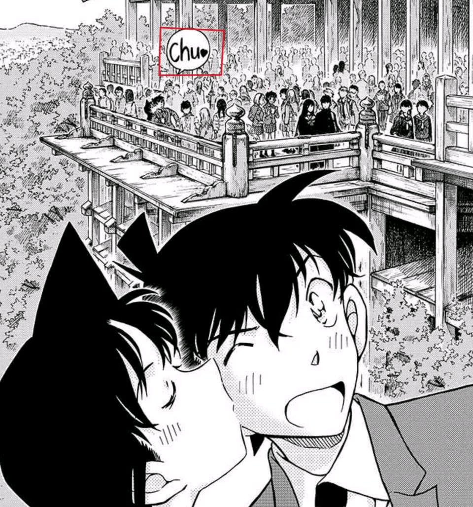
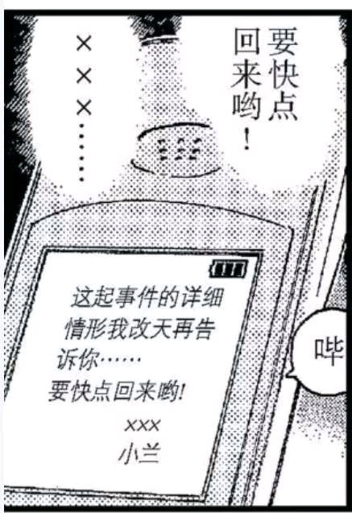
2024-03-07 01:41 | bearaven:强行破解手机也正是怕这封邮件被她臆想的那个女的和新一一起笑话2024-03-07 01:43 | bearaven:@耶和华仿聚 这也是贝兰世代继承的一例。X kiss chu2024-03-07 05:18 | 即将02的废物月:强烈的“恶意”并没有消散，只是换了种表达方式2024-03-07 06:54 | 耶和华仿聚:回复 bearaven :懂了2024-03-07 08:26 | bearaven:回复 即将02的废物月 :这人酝酿了快二十年吧，最后最大的处刑魔术2024-03-07 08:28 | 即将02的废物月:回复 bearaven :“我不是画的挺明显的嘛”（笑）2024-03-07 08:33 | 即将02的废物月:回复 bearaven :我怀疑之前的多次快兰也是仪式的关键部分之一2024-03-07 08:34 | bearaven:回复 即将02的废物月 :给我奥德赛的感觉2024-03-07 09:20 | 暗羽靖玄:回复 bearaven :这老头还真的有玩奥德赛的梗(但那是赤井家的事儿了)2024-04-14 12:51 | 贴吧用户_G1Ab76D:难道他真的是天才
稍微看了一下全部，感觉很多地方属于过度解读，因为主次关系的话还是先设计了故事再添加jdj的符号，因为最初的感情不是来源于宗教。符号更多是评语，提词这种。所以符号体系也是取了有用的地方，不是全取，而有用的判断标准是上游的故事结构。
柯南里面的符号比较饱和而且来源混杂，西式与日系都有。 看清楚的话是要找到最初的结构的来历，类似文化考古学科的那种神话体系演变的研究。 大体分类的话差不多是学习日本历史的太阳巫女与喜欢西方文化的三脚猫自大魔术师的共同产物。但是这个巫女比较喜欢法国的东西，而这个魔术师比较喜欢兔子 这个斗法比较交错就是了
柯南里面的符号比较饱和而且来源混杂，西式与日系都有。 看清楚的话是要找到最初的结构的来历，类似文化考古学科的那种神话体系演变的研究。
大体分类的话差不多是学习日本历史的太阳巫女与喜欢西方文化的三脚猫自大魔术师的共同产物。但是这个巫女比较喜欢法国的东西，而这个魔术师比较喜欢兔子 这个斗法比较交错就是了宗教梗确实用了不少，比如默示录，月亮女神，你说的这个有没有不知道，清水寺的传说是73自己编的。有没有参考，我不鸡到啊。
2024-03-07 14:55 | 贴吧用户_0795E8E:月亮女神不是宗教梗而是星座体系。清水寺不太清楚什么意义，可以是高台的意思，联系大国主神体系，也可以是修建者德川家光，一个组织boss形象的候补
我就觉得红修篇敲响了新兰关系的丧钟
犹大吻主之前就已经背叛了 这个背叛在柯南里指的是什么。。。。
2024-03-09 01:01 | 雪者风形:我在上面就这犹大的设定阅读捋了一下，应该是宏观的“反感推理”和“比起推理本身更重视其他”之类的吧2024-03-09 01:03 | 樱一ww:回复 雪者风形 :红修篇的犹大之吻。那么之前的毛利兰认为新一应该去当小说家或足球运动员的想法就对应了犹大想让耶稣登基称王。2024-03-09 01:08 | 雪者风形:这个对应确实合理，就是被吞了（
喜欢，顶帖
秒了
这个也有意思
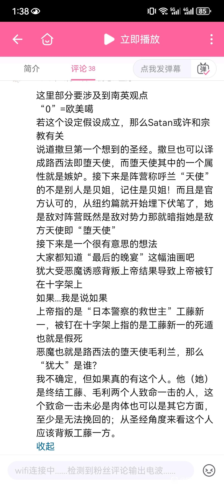
这个太扯了，感觉73不会往那方面想

这两个版本的图最大的区别似乎就是主人公的姿势，犹大之吻中是犹大倾向耶稣，而世纪之吻中是兰将新一拉向自己。
这里应该联系的其实是另一个漫画镜头，就是经典的游船对视，游船的杆子隔开两人，分开了领域内外。
世纪之吻中，新一在被拉过来的同时，背景和前景中同样有一根贯穿上下的杆子，但由于是被拉了过来所以（表面上）没有分割的效果。然而两人来到了同一个领域并不是因为毛利兰进入了推理的领域之中，令人感叹。
这里应该联系的其实是另一个漫画镜头，就是经典的游船对视，游船的杆子隔开两人，分开了领域内外。
世纪之吻中，新一在被拉过来的同时，背景和前景中同样有一根贯穿上下的杆子，但由于是被拉了过来所以（表面上）没有分割的效果。然而两人来到了同一个领域并不是因为毛利兰进入了推理的领域之中，令人感叹。
所以小兰绝对会以一种极其离谱的做法让红方大受打击，直接导致工藤新一这个身份的死亡(世良:你真的是工藤新一吗?优作:不对，江户川柯南)
2024-04-19 20:48 | 顽皮鬼才:不是红方，而是哀。目前剧情只有哀不安全会让柯暴跳如雷，暴跳如雷的程度大概是神挡杀神佛挡杀佛，杀一人不够必须诛十族。2024-04-19 20:51 | 顽皮鬼才:最后的解药为哀而用已经是定死的了，所以当然是柯想也不想就自爆救哀。两件事结合起来，脉络已经明确了
顶
第一话就已经说明了工藤新一是日/本/警/察的救世主，救世主在圣经中指的就是耶稣基督，兰吻新一的脸可不就是犹大出卖耶稣吗